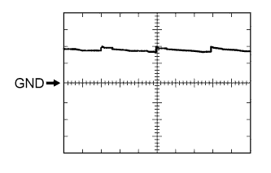
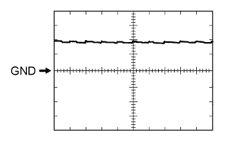
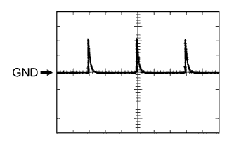
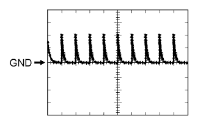

SLIDING ROOF SYSTEM > TERMINALS OF ECU |
| CHECK SLIDING ROOF DRIVE GEAR SUB-ASSEMBLY (SLIDING ROOF ECU) |
Disconnect the W2 ECU connector.
Measure the resistance and voltage according to the value(s) in the table below.
| Terminal No. (Symbol) | Wiring Color | Terminal Description | Condition | Specified Condition |
| W2-1 (B) - W2-2 (E) | W - W-B | Battery power supply | Always | 11 to 14 V |
| W2-5 (IG) - W2-2 (E) | L - W-B | Engine switch power supply | Engine switch off | Below 1 V |
| W2-5 (IG) - W2-2 (E) | L - W-B | Engine switch power supply | Engine switch on (IG) | 11 to 14 V |
| W2-2 (E) - Body ground | W-B - Body ground | Ground | Always | Below 1 Ω |
Reconnect the W2 ECU connector.
Measure the voltage according to the value(s) in the table below.
| Terminal No. (Symbol) | Wiring Color | Terminal Description | Condition | Specified Condition |
| W2-7 (OPN) - W2-2 (E) | LG - W-B | Sliding roof motor slide open signal | Engine switch on (IG), sliding roof closed Slide open switch off | 11 to 14 V |
| W2-7 (OPN) - W2-2 (E) | LG - W-B | Sliding roof motor slide open signal | Engine switch on (IG), sliding roof closed Slide open switch on | Below 1 V |
| W2-9 (CLS) - W2-2 (E) | B - W-B | Sliding roof motor slide close signal | Engine switch on (IG), sliding roof open Slide close switch off | 11 to 14 V |
| W2-9 (CLS) - W2-2 (E) | B - W-B | Sliding roof motor slide close signal | Engine switch on (IG), sliding roof open Slide close switch on | Below 1 V |
| W2-10 (UP) - W2-2 (E) | R - W-B | Sliding roof motor tilt up signal | Engine switch on (IG), sliding roof tilted downward Tilt up switch off | 11 to 14 V |
| W2-10 (UP) - W2-2 (E) | R - W-B | Sliding roof motor tilt up signal | Engine switch on (IG), sliding roof tilted downward Tilt up switch on | Below 1 V |
| W2-8 (DWN) - W2-2 (E) | P - W-B | Sliding roof motor tilt down signal | Engine switch on (IG), sliding roof tilted upward Tilt down switch off | 11 to 14 V |
| W2-8 (DWN) - W2-2 (E) | P - W-B | Sliding roof motor tilt down signal | Engine switch on (IG), sliding roof tilted upward Tilt down switch on | Below 1 V |
| CHECK DRIVER SIDE JUNCTION BLOCK ASSEMBLY AND MAIN BODY ECU (MULTIPLEX NETWORK BODY ECU) |
Remove the main body ECU (multiplex network body ECU) from the driver side junction block assembly (Click here).
Measure the voltage and resistance according to the value(s) in the table below.
| Terminal No. (Symbol) | Wiring Color | Terminal Description | Condition | Specified Condition |
| A-30 (BECU) - Body ground | - | Battery power supply | Always | 11 to 14 V |
| A-31 (ALTB) - Body ground | - | Battery power supply | Always | 11 to 14 V |
| A-32 (IG) - Body ground | - | Engine switch power supply | Engine switch on (IG) | 11 to 14 V |
| A-32 (IG) - Body ground | - | Engine switch power supply | Engine switch off | Below 1 V |
| A-29 (ACC) - Body ground | - | ACC power supply | Engine switch on (ACC) | 11 to 14 V |
| A-29 (ACC) - Body ground | - | ACC power supply | Engine switch off | Below 1 V |
| A-11 (GND1) - Body ground | - | Ground | Always | Below 1 Ω |
| G46-3 (GND2) - Body ground | W-B - Body ground | Ground | Always | Below 1 Ω |
Install the main body ECU (multiplex network body ECU) (Click here).
Measure the voltage according to the value(s) in the table below.
| Terminal No. (Symbol) | Wiring Color | Terminal Description | Condition | Specified Condition |
| 2H-27 (FLCY) - Body ground | R - Body ground | Front door courtesy switch LH input | Front door LH open | Below 1 V |
| 2H-27 (FLCY) - Body ground | R - Body ground | Front door courtesy switch LH input | Front door LH closed | 11 to 14 V |
| G47-11 (L2) - Body ground | GR - Body ground | Driver side door key-linked lock input | Driver side door key cylinder in lock position | Below 1 V |
| G47-11 (L2) - Body ground | GR - Body ground | Driver side door key-linked lock input | Engine switch off, all doors closed and driver side door key cylinder in neutral position | Pulse generation (See waveform 1 or 2) |
| G47-24 (UL3) - Body ground | LG - Body ground | Driver side door key-linked unlock input | Driver side door key cylinder in unlock position | Below 1 V |
| G47-24 (UL3) - Body ground | LG - Body ground | Driver side door key-linked unlock input | Engine switch off, all doors closed and driver side door key cylinder in neutral position | Pulse generation (See waveform 3 or 4) |
|  |
Using an oscilloscope, check waveform 1.
| Item | Content |
| Terminal No. (Symbol) | G47-11 (L2) - Body ground |
| Tool Setting | 5 V/DIV., 20 ms/DIV. |
| Condition | Engine switch off, all doors closed and front door key cylinder in neutral position |
|  |
Using an oscilloscope, check waveform 2.
| Item | Content |
| Terminal No. (Symbol) | G47-11 (L2) - Body ground |
| Tool Setting | 5 V/DIV., 20 ms/DIV. |
| Condition | Engine switch off, all doors closed and front door key cylinder in neutral position |
|  |
Using an oscilloscope, check waveform 3.
| Item | Content |
| Terminal No. (Symbol) | G47-24 (UL3) - Body ground |
| Tool Setting | 5 V/DIV., 20 ms/DIV. |
| Condition | Engine switch off, all doors closed and driver side door key cylinder in neutral position |
|  |
Using an oscilloscope, check waveform 4.
| Item | Content |
| Terminal No. (Symbol) | G47-24 (UL3) - Body ground |
| Tool Setting | 5 V/DIV., 20 ms/DIV. |
| Condition | Engine switch off, all doors closed and driver side door key cylinder in neutral position |
| CHECK CERTIFICATION ECU |
Disconnect the G26 ECU connector.
Measure the voltage and resistance according to the value(s) in the table below.
| Terminal No. (Symbol) | Wiring Color | Terminal Description | Condition | Specified Condition |
| G26-1 (+B) - G26-15 (E) | V - W-B | Battery power supply | Always | 11 to 14 V |
| G26-15 (E) - Body ground | W-B - Body ground | Ground | Always | Below 1 Ω |
| G26-16 (IG) - G26-15 (E) | W - W-B | Engine switch power supply | Engine switch off | Below 1 V |
| G26-16 (IG) - G26-15 (E) | W - W-B | Engine switch power supply | Engine switch on (IG) | 11 to 14 V |
| G26-17 (CUTB) - G26-15 (E) | L - W-B | Battery power supply | Always | 11 to 14 V |
Reconnect the G26 ECU connector.
Measure the voltage according to the value(s) in the table below.
| Terminal No. (Symbol) | Wiring Color | Terminal Description | Condition | Specified Condition |
| G27-5 (RCO) - G26-15 (E) | L - W-B | Door control receiver power source | Engine switch off, all doors closed and transmitter switch not pressed | Below 1 V |
| G27-5 (RCO) - G26-15 (E) | L - W-B | Door control receiver power source | Engine switch off, all doors closed and transmitter switch pressed | 4.5 to 5.5 V |
| G27-15 (RDA) - G26-15 (E) | G - W-B | Door control receiver data input signal | Engine switch off | 11 to 14 V pulse generation at regular intervals |
| G27-16 (RSSI) - G26-15 (E) | P - W-B | Door control receiver electric wave existence signal | All doors locked, all doors closed and transmitter switch not pressed | 11 to 14 V |
| G27-16 (RSSI) - G26-15 (E) | P - W-B | Door control receiver electric wave existence signal | All doors locked, all doors closed and transmitter switch pressed | Below 2 V |